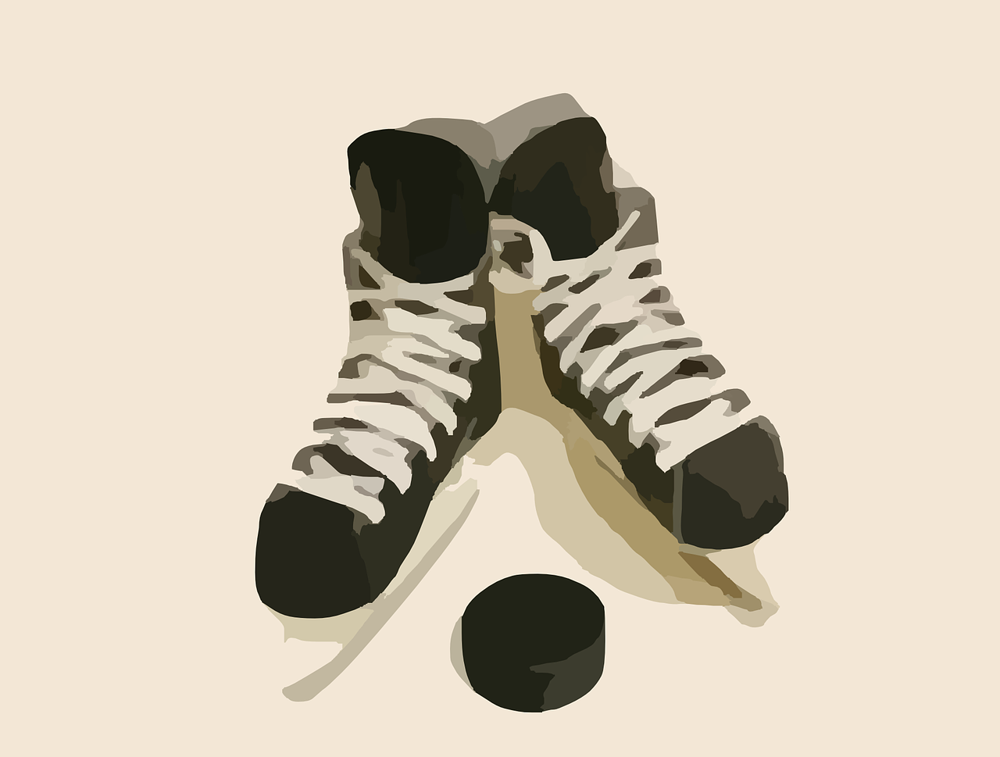

Problem
Mitig loves to play hockey. He also loves to collect hockey cards. He has 169 hockey cards in total. Mitig’s younger cousin Aki also loves to play hockey, and she is just beginning her collection of hockey cards. She starts with 9.
If Mitig gives Aki 8 cards a day, will they ever have the same number of cards in their collections?
If they do end up with the same number of cards at some point, how many cards does each have and how many days will it take for this to happen?
Solution
One way to solve this problem would be to create a table that keeps track of how many cards Mitig and Aki have each day. Day 0 represents the day before Mitig starts giving cards to Ali. Each day, Mitig’s total will decrease by 8 and Aki’s total will increase by 8.
| Day | Mitig’s Total | Aki’s Total |
|---|---|---|
| 0 | 169 | 9 |
| 1 | 161 | 17 |
| 2 | 153 | 25 |
| 3 | 145 | 33 |
| 4 | 137 | 41 |
| 5 | 129 | 49 |
| 6 | 121 | 57 |
| 7 | 113 | 65 |
| 8 | 105 | 73 |
| 9 | 97 | 81 |
| 10 | 89 | 89 |
So, on the 10th day, Mitig and Aki each have 89 hockey cards.
Another way to solve this problem is to see that Mitig and Aki have a total of \(169 + 9= 178\) cards. They will have the same number of cards when each has half of the total: \(178 \div 2 = 89\) cards. So Aki needs \(89 - 9 = 80\) more cards to have half of them. If Mitig gives 8 cards each day, that will take \(80 \div 8 = 10\) days. Since there is no remainder in this division, they will have the same number of cards on the 10th day.
Teacher’s Notes
If this question was asked in a high school mathematics class, students might use a very different approach to find the answer.
Each person’s collection total could be described with a mathematical equation that describes the relationship between the number of days that have passed and the total number of hockey cards each person has.
Let \(x\) represent the number of days of trading.
Let \(y\) represent the number of hockey cards.
For Mitig, the equation showing his number of hockey cards over time is:
\[y = 169 - 8x\]
For Aki, the equation showing her number of hockey cards over time is:
\[y = 9 + 8x\]
We can draw straight lines on a graph that represent these equations. We know that any two lines that are not parallel will intersect at a point. Solving this problem is the same as finding the point of intersection of these two lines.
If we precisely draw each of these lines, we can find the point of intersection graphically. We could also use algebraic techniques that would use the equations to solve the problem. In mathematics there are often many ways to solve the same problem.